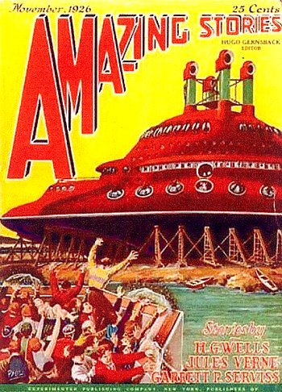

A Genève (Suisse), un mystérieux dirigeable est vu dans le
ciel "Il
dirigibile 'P. M'. nel cielo di Genova", Il Giornale d'Italia de Rome (Italie), 14 mai 1926, p. 6.
Dans le quartier de
Koukonor (Mongolie), pas
loin de la chaîne de Humboldt, une des
régions alors les plus sauvages de l'Asie, ou aucun dirigeable n'a a priori jamais volé, Nicholas Roerich
Explorateur et observateur expérimenté et son équipe observent depuis leur camp :
Quelques uns de nos caravaniers aperçurent un aigle noir particulièrement gros volant au-dessus de nous. 7
d'entre nous commencèrent à observer cet oiseau
inhabituel. Au même moment, un autre de nos caravaniers remarqua : "Il y a quelque chose loin au-dessus de
l'oiseau". Et il cria son étonnement. Nous vîmes
tous, dans une direction allant du nord au sud, quelque chose de gros et de brillant reflétant le soleil,
comme un énorme ovale se déplaçant à grande vitesse. En croisant notre camp, cette chose changea de direction
sud vers le sud-ouest. Et nous vîmes comment elle disparut dans le ciel d'un bleu intense. Nous eûmes même le
temps de prendre nos jumelles de campagne et de voir assez distinctement une forme ovale à la surface
brillante, dont un côté brillait au soleilRerikh, Nikolaï Konstantinovich (Nicholas Roerich): Altai-Himalaya:
A Travel Diary, New York, Frederick A. Stokes Co., 1929, pp. 361-62 < Deliyannis, Y.: Courrier à ce site, 3 décembre 2007.
A Deventer (Pays Bas), au Platvoet, pas un temps de
brume, observation d'une "grosse boule feu" au même moment que le coucher du
soleil "Een Luchtverschijnel", Het
Vaderland (Pays Bas), édition du soir, 21 août 1926.
Couverture de Amazing Stories n° 8, vol. 1 de novembre Collection Les Treece-Sinclair < UFOPOP 
A Bolton (Lancashire, Angleterre), Henry Thomas, le jeune fils d'un policier, est mis
au lit. Il veut jouer avec ses amis qui se trouvent dehors. Il se faufile hors de la maison pour les rejoindre.
Ils commencent un jeu de cache-cache dans les ruelles. Voyant une porte de derrière entrebaillée, Henry pénètre
dans la cour avec l'espoir d'y découvrir l'un de ses amis caché. Dans la cour se trouvent 3 personnes de taille
normale, regardant à travers la fenêtre de derrière d'une maison. Le trio est vêtu d'étranges costumes qui
semblent composés de tubes de caoutchouc gris-argentés, et sont chaussés de bottes noires. Ils font penser à des
versions "maigres" du bonhomme Michelin. Ils portent des casques transparents en forme de dôme.
Des tubes en sortent jusqu'à des réservoirs que les créatures portent sur leur dos. Les "hommes" se tournent
alors pour faire face au gamin. Ils ont des visages pâles en forme d'ampoule, des yeux sombres et bridés,
presque pas de nez et aucune bouche apparente. Henry a l'impression qu'ils sont bienveillants malgré leur
apparence effrayante. L'un deux fait un bruit de glouglou et tous 3 commencent à s'avancer vers le garçon qui
s'enfuit terrorisé.
A Colun Judetul Sibiu (Roumanie), Ion Bunescu est avec ses chevaux
sur la route d'un terrain de pâturage et voit dans la nuit une ”lance illuminée” de la taille de la
Lune. L'objet reste immobile durant ou au-dessus de la tête de Bunescu. Il a la
forme d'un bateau long de 3 m et large de 2 m. Le milieu est plus sombre que les extrêmités. Après cela l'objet se
dirige vers Arpasul de Jos (8 km plus loin) et après avoir fait le tour d'un petit bois à 3 km de Cîrta il s'éteint
soudain (l'endroit où se trouve le témoin est une colline avec une très bonne visibilité d'environ 60 km). L'objet
fait un bruit de sifflement et tous les environs sont éclairés comme s'il faisant jour
Hobana, Ion & Julien Weverberg, UFO's Behind the Iron
Curtain.
Le docteur Charles F. Bush, licencié et docteur ès Sciences, découvre d'étranges propriétés chez une roche nommée
"basalte de Lintz" : elle dégagerait plus de chaleur qu'aucune autre et n'accélérerait pas en chute libre ; disons
qu'elle resterait plus ou moins en suspension dans l'air.
{kind=link}